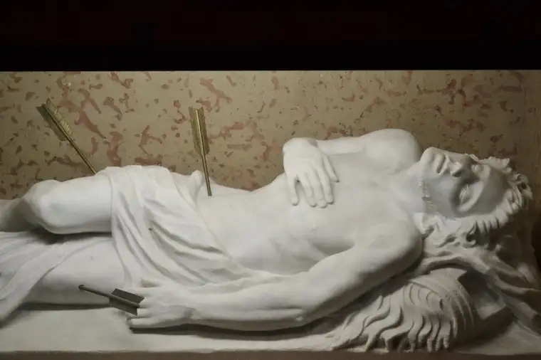
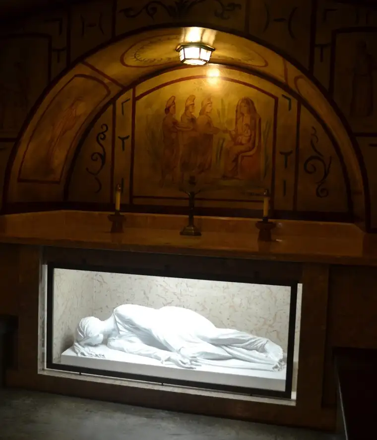
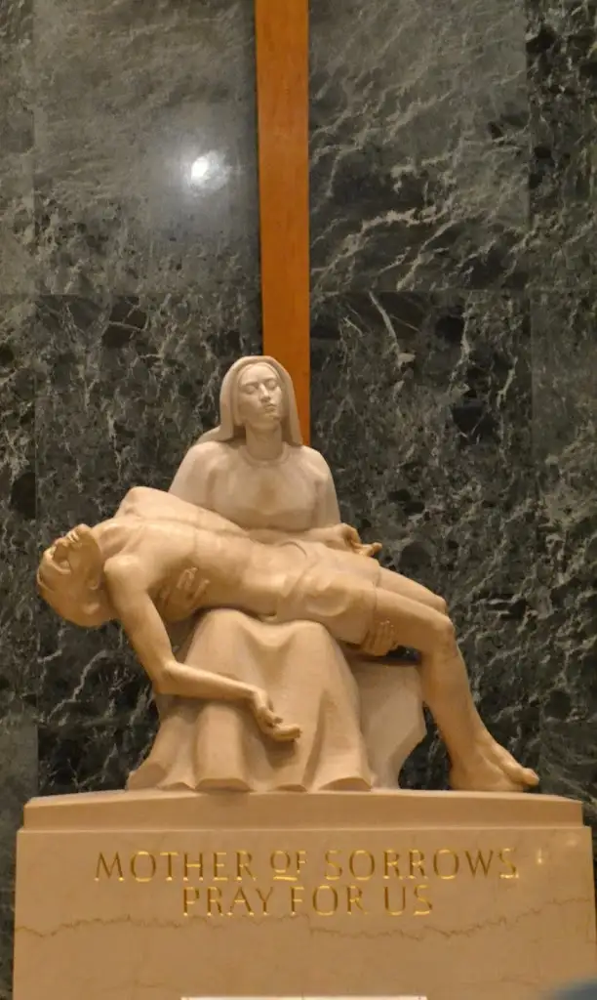
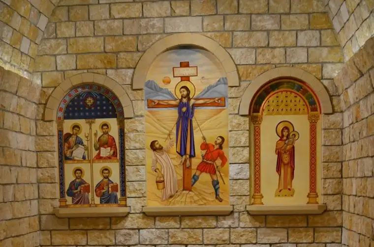
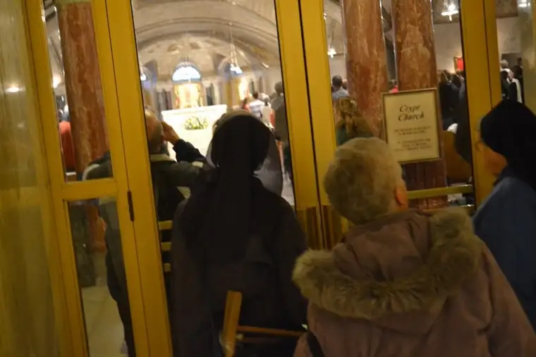

Somehow, I made it out of D.C. alive.
There were times I wondered if it would happen, truly. For one, 50+ hours traveling on a bus with mostly teenagers, virtually no leg room and an aisle seat, and tons of walking running to get to the bus on time left me in physical pain by the end of the pilgrimage.
I also got lost on the day of the March for Life. Yes, the day 500,000 people surrounded, I stopped to take a photo, and by the time I looked up again, poof! My group had vanished; a group that included my daughter and the people I was there to chaperone and photograph.
Not good. I shed a few quiet tears after the fourth cell-phone attempt came up empty. Thanks be to God, after several stressful phone conversations, I ended up reunited with my group in time for the longest part of the March. God brought me back. Dad too, perhaps.
Though the March was an incredible experience, that’s not what I’m feeling inclined to share about just now. Rather, ever since arriving in D.C., a journey that was all about life, I’m still stuck on the death of it.
But please hang on. I’m not intending this to be depressing. Not at all.
Yes, it’s true. I am still a grieving daughter. The loss of my father on Jan. 11 still haunts. But my days since haven’t been without light and joy. And I have to say, especially after what I saw in D.C., that the Catholic approach to death has been a huge part of the exacerbation of my healing.
It struck me first at our first stop — the Franciscan Monastery of the Holy Land.
{kind=link}
Death and dying, everywhere…
 |
| St. Sebastian, patron saint of athletes |
{kind=link}
{kind=link}
{kind=link}
And yet so beautifully depicted.
 |
| Crypt of the Holy Land Monastery, St. Cecilia, patron saint of musicians. |
{kind=link}
This was a comfort to me, so fresh from the deathbed of my father. There’s something about watching a loved one die that causes the grip of death to lose a bit of its power — at least for me.
 |
| Basilica of the National Shrine of the Immaculate Conception |
{kind=link}
Yes, it was soothing to me to be reminded that death…is just another part of the life continuum.
I recall again a conversation I had earlier this year about the Catholic focus on the crucifix.
{kind=link}
Yes, we are big on that, but it does not mean we obsess about death.
| March for Life 2013, Washington, D.C. |
{kind=link}
Rather, we acknowledge it. We don’t pretend it doesn’t exist. And in doing so, we are zeroing in on life. “This sad thing happens, but this good thing follows.”
In creating art depicting death, we declare ourselves free from the bondage of death.
{kind=link}
Again, we are saying, this happens. And when it does, we weep, and that’s okay.
{kind=link}
But…it’s not the end. Far from it.
It really is the beginning.
 |
| Meditation area – Basilica of the National Shrine of the Immaculate Conception |
{kind=link}
A dear friend from Canada sent a book this week, and in a chapter on the Catholic perspective of death, this quote jumped out at me:
“God has not taken them from us; He has hidden them in His Heart that they may be closer to ours.” – Maurice Zundel
Praise be to God that this would be part of His plan; that this end is truly just a time of waiting for the beginning around the bend.
 |
| Crypt Church – Basilica of the National Shrine of the Immaculate Conception |
{kind=link}